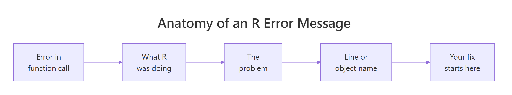
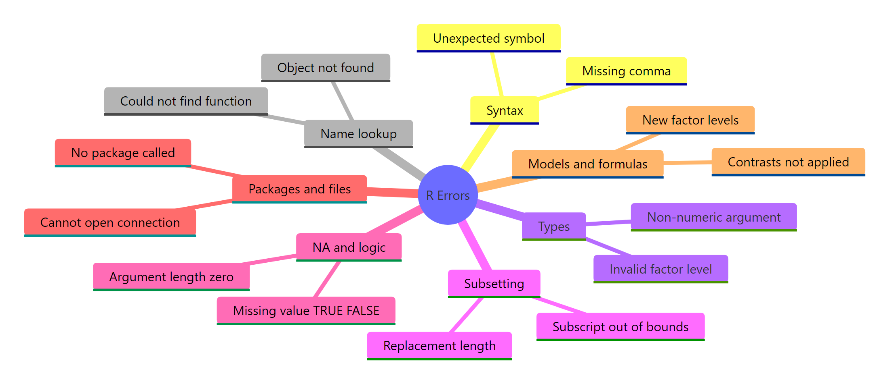
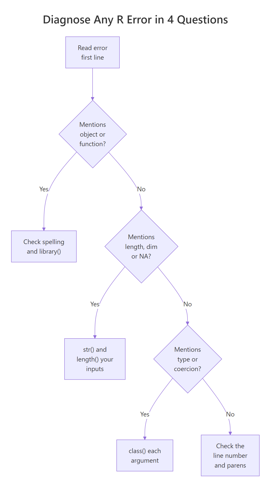

50 R Errors Decoded: Plain-English Explanations and Exact Fixes
R errors look cryptic, but almost every one belongs to one of seven tight families, once you can name the family, the fix is usually a single line. This page is the full decoder: 50 real errors, the exact code that triggers each one, and the one-line fix.
Bookmark it. Hit Ctrl+F, paste the error text, and jump to the fix. Every code block is runnable, trigger the error yourself, then watch the fix work, all without leaving the page.
How do you read an R error message?
Every R error has the same shape: the function that exploded, the thing that went wrong, and a pointer back to your code. If you can spot those three parts, you can fix most errors in under a minute, even ones you've never seen before. Let's trigger a real error inside a safe wrapper (so the page keeps running) and pull it apart.
The call mean(missing_vec) blew up because missing_vec doesn't exist. Instead of letting the page crash, tryCatch() caught the error and handed us the message as a string. That's the same text you'd see in the RStudio console, and the three parts are always there, in that order. The function name tells you where to start looking; the problem phrase names the category; the pointer (usually an object or variable name) tells you exactly what to fix.

Figure 1: The three parts of every R error message.
Try it: Use tryCatch() to capture the error from calling ex_nope() (a function that doesn't exist) and store the message in ex_err. Then print it.
Click to reveal solution
Explanation: tryCatch() runs the expression. If it errors, the error = function(e) handler fires and conditionMessage(e) returns the message text as a plain string. The message itself names both the exploded function and the problem phrase, which puts you one grep away from a fix.
What are the 7 categories every R error falls into?
Thousands of distinct error strings exist in R, but they collapse into seven tight families. Knowing which family an error belongs to narrows your fix from "guess and hope" to a short, targeted checklist. Once you memorize the families, error messages stop feeling random and start feeling like form-filled complaints.
Here's a tiny classifier that maps a few error phrases to their family, so you can see the buckets in action before we drill into each one.
The first call classifies the earlier err_msg as a Name lookup failure, the same family as "could not find function". The other two show the classifier routing a syntax error and a type error to their correct buckets. In real debugging you won't write a grep classifier; you'll do it in your head. But the shape of the thinking is exactly this: read the message, match a phrase, pick a family, then apply that family's standard fix.

Figure 2: The 7 families every R error belongs to.
Try it: Extend bucket_of() to return "Models / formulas" for the error phrase "factor has new levels". Test it on that exact string.
Click to reveal solution
Explanation: grepl() returns TRUE when the pattern is found in the string. "New levels" is the signature phrase of factor-based model errors, so it lands in the Models / formulas bucket cleanly.
Which syntax and parse errors trip up beginners?
Syntax errors are the ones R catches before it even runs your code. The parser reaches a token it can't make sense of and stops. The good news: the error always points at the exact offending character, so the fix is almost always a typo. The bad news: R's phrasing ("unexpected X") is vague enough that beginners often stare at the wrong line.
Let's walk through the eight most common syntax errors, errors 1 through 8 in the master table at the bottom, and fix each one in place.
The parser sees x, then y, and has no rule that says two bare names can sit next to each other, so it complains about the second one. Joining them with an underscore (or adding a real operator between them) makes the line parse. The same shape fixes errors like x.y typos and missing commas in argument lists.
Both of these are parser complaints about what comes after a valid expression. The trailing-comma bug is especially common when you're refactoring c() or list() calls and delete the last item but forget the comma. Errors 4 (unexpected string constant) and 5 (unexpected }) follow the same pattern, something valid, then something the parser can't attach to it.
= and <- inside function calls silently swallows named arguments. If you write mean(x <- 1:5), R creates a new variable x and passes its value as the first positional argument, not as a named one. Always use = for named arguments inside function calls, and <- only for assignment outside them.Try it: The line below has a trailing-comma syntax error. Fix it so it parses and returns 6.
Click to reveal solution
Explanation: The trailing comma inside sum(...,) caused an "unexpected ')'" error. Dropping it leaves a valid call whose result is 6.
Why do "object not found" and "could not find function" errors happen?
R looks up names in a chain of environments, starting with the current one and walking outward to the search path of loaded packages. When it reaches the end without a match, you get an object 'x' not found error (for variables) or could not find function "f" (for functions). Both mean the same thing: R looked everywhere and didn't find the name you typed.
These are errors 9 through 16 in the master table. The fixes are almost always one of: fix a typo, assign the variable first, or call library() on the package.
This is the #1 most-seen R error on Stack Overflow. The lookup chain is strict: my_value and myvalue are different names, and R does not guess. A frequent surprise is that variables created inside a function are not visible outside, if my_val was assigned inside f(), calling my_val at the top level still errors.
library(dplyr) attaches dplyr to the search path, so filter(), mutate(), and friends become visible. Until you call library(), those functions exist inside the installed package but aren't reachable by their short names. Error 11 (there is no package called 'dplyr') is a level worse: the package isn't even installed, and you need install.packages("dplyr") first.
When you load a package that defines a function with the same name as one already on the search path, R prints a "masked from" message at load time and then the new one wins. If the caller was expecting the old function, you get a type error, a formula error, or worst of all a wrong answer with no error at all. Errors 13–16 in this family include $ on non-list, error in UseMethod, and invalid argument to unary operator, all flavours of "R looked up a name and got something of the wrong kind."
dplyr::filter(df, cond) always calls dplyr's filter() regardless of search-path order. Reach for this the moment you see a "masked from" message at package load.Try it: The code below fails with could not find function "select" when dplyr isn't loaded. Write the call with an explicit namespace so it works even if the package hasn't been attached.
Click to reveal solution
Explanation: dplyr::select() reaches straight into the dplyr namespace, so the call works whether or not library(dplyr) has been run. This is also the bulletproof fix for masking bugs.
How do type and coercion errors sneak in?
R is strict about types at operation time but lazy about them at assignment time. You can stuff anything into a variable without a complaint, then get screamed at the moment you try to use it. That mismatch is where errors 17 through 26 come from, operations that demanded numeric and found character, or vice versa.
The string "42" prints like a number but is stored as character. R's + has no rule for character + numeric, so it errors instead of guessing. Wrapping the string in as.numeric() makes the intent explicit and the operation safe. The same pattern fixes error 18 ("3" * 2), error 19 (mean(c("1","2"))), and error 20 (log("10")).
This one is a warning, not a hard error, the call still returns a vector. But the NA in position 3 will bite you downstream the moment you call sum() or mean() without na.rm = TRUE. Always fix the root cause: either clean the strings before coercing, or use readr::parse_number() which extracts the leading numeric part safely. Errors 22–26 in this family include invalid factor level, NA generated, argument is of length zero, invalid type (list) for variable, $ on atomic vector, and ! not meaningful for factors.
x <- "42", but x + 1 explodes. The fix is always to coerce before the operation, not pretend the assignment was different.Try it: The vector ex_vals mixes character and numeric. Coerce it, then compute the mean ignoring NAs.
Click to reveal solution
Explanation: as.numeric() converts parseable strings to numbers and turns "thirty" into NA (with a warning, which we suppress because we expect it). Passing na.rm = TRUE tells mean() to skip those NAs, giving the average of 10, 20, and 40.
Why do subsetting, indexing, and NA errors surface?
Subsetting is where R's "vectors are nice, matrices and data frames are strict" rule bites hardest. A vector tolerates out-of-range indices silently. A matrix or data frame does not. Errors 27 through 36 live in this gap, plus the NA-in-condition family that breaks if() statements.
This asymmetry is one of the top-5 R gotchas. x[10] on a length-5 vector returns NA with no warning. mtx[3, 1] on a 2×2 matrix throws a hard error. If you built your code expecting vector-style silent NAs and then generalised to a matrix, you get a surprise error in production. Always bounds-check with nrow() or ncol() before subsetting matrices and data frames.
"Undefined columns selected" is the data-frame version of "name not found". Use names(df) or "col" %in% names(df) to probe before indexing, especially when column names come from user input or a read.csv() whose headers got mangled.
The if() statement demands a single TRUE or FALSE. When your condition involves data that could be NA, it returns NA and if() refuses to branch on uncertainty. isTRUE() is the safe wrapper: it returns FALSE for anything that isn't exactly TRUE, including NA. Errors 33–36 in this family include argument is of length zero, NAs in subscripted assignment, invalid subscript type 'list', and attempt to select less than one element.
Try it: The code below errors because ex_na_flag is NA. Fix it with isTRUE() so it returns "skip".
Click to reveal solution
Explanation: isTRUE(NA) returns FALSE, so the else branch runs. Without isTRUE(), the raw NA would crash if() with "missing value where TRUE/FALSE needed".
What about package, file, and model-fitting errors?
The last stretch covers errors that surface when R talks to the outside world, packages, files, URLs, the working directory, and errors from statistical modelling functions like lm() and glm(). Together they make up errors 37 through 50 in the reference table. The patterns are mostly about missing resources and unexpected data shapes.
This error blocks library() itself. The fix is always install.packages("<name>") first, then library(<name>). If install fails with "package is not available for this version of R", you're on an older R; upgrade R or install from the CRAN archive. Error 38 (cannot open file 'data.csv') means the file path is wrong relative to getwd(), fix it with file.exists(path) before read.csv(). Error 39 (cannot change working directory) points at a typo in setwd().
The lm() call failed because grp has only one level, you can't fit a coefficient for a group that never varies. droplevels(model_df) is the usual fix when the single level is a leftover from filtering; dropping the factor from the formula works when it was never meaningful. Errors 46–50 in this family include factor has new levels (your test data has a level the training data didn't see), system is computationally singular (perfectly collinear predictors), non-conformable arguments (matrix dimension mismatch), variable lengths differ, and missing values in object (NAs in lm() without na.action = na.omit).
droplevels(df) and na.omit(df), in that order, fix roughly 90% of lm()/glm() errors without touching the formula.Try it: predict() on new data with an unseen factor level will error. Handle it by using droplevels() on the training data first, then fitting. Fill in the fit step.
Click to reveal solution
Explanation: droplevels() removes the unused "c" level, leaving only the two levels that actually appear in the data. The lm() then fits cleanly, and future predict() calls on new data with levels "a" or "b" work without errors.
Practice Exercises
Exercise 1: Fix the 3-bug pipeline
The pipeline below tries to filter mtcars to 6-cylinder cars with decent mileage, then compute the mean horsepower. It has three bugs spanning three error families. Find and fix them all so my_result is a one-row data frame.
Click to reveal solution
Explanation: Three fixes: (1) cylinders → cyl (no such column), (2) fully qualifying dplyr::filter dodges any masking by stats::filter, and (3) mean("hp") was passing a character string instead of the column, drop the quotes so hp resolves to the column vector inside summarise().
Exercise 2: Name the family, write the fix
For each error message below, name the family and write the one-line fix. Save your answers as a named character vector called my_diag.
Click to reveal solution
Explanation: Each message has a signature phrase that points at one family. Once you name the family, the fix is the family's standard recipe, coerce, load, wrap, bounds-check.
Exercise 3: Predict error, warning, or silent wrong answer
For each snippet below, predict whether it errors, warns with an NA, or silently returns something wrong. Save your predictions as a named character vector called my_predict.
Click to reveal solution
Explanation: sum(c(1,2,"3")) errors because the vector coerces to character first. (1:5)[10] on a vector returns NA silently. matrix(...)[3,1] errors because matrices bounds-check. mean(c(1,NA,3)) returns NA because na.rm defaults to FALSE. if (NA > 0) errors with "missing value where TRUE/FALSE needed". The vector/matrix asymmetry is the non-obvious one.
Complete Example: debugging a real pipeline
Let's put it all together. Below is a messy pipeline that takes some survey-style data, cleans it, and fits a linear model. It has six latent bugs across four error families. We'll walk through fixing each one using the four-question diagnostic.
Walking through: (1) the raw age column was character, so as.numeric() coerces it and would issue a "NAs introduced by coercion" warning for "NA", expected and suppressed. (2) complete.cases() drops the row with NA age/score, avoiding the "missing values in object" error that lm() would throw with default na.action. (3) droplevels() collapses the factor so "contrasts can be applied only to factors with 2 or more levels" never fires. (4) Dropping group from the formula sidesteps the single-level factor entirely. Each fix maps directly to one of the seven families, and each one is a single line.

Figure 3: Four questions that pin down any R error.
Summary
The 50 errors in one reference table, grouped by family, with the trigger and the one-line fix. Ctrl+F the error text on this page, then jump to the row below for the pattern.
| # | Error phrase | Family | Typical trigger | One-line fix |
|---|---|---|---|---|
| 1 | unexpected symbol | Syntax | x y <- 5 |
add operator or join names |
| 2 | unexpected ) |
Syntax | trailing comma in c(1,2,) |
drop trailing comma |
| 3 | unexpected numeric constant | Syntax | 2 3 |
add * or , |
| 4 | unexpected string constant | Syntax | "a" "b" |
add operator or c() |
| 5 | unexpected } |
Syntax | extra } |
match braces |
| 6 | invalid multibyte character in parser | Syntax | non-UTF-8 file | save as UTF-8 |
| 7 | unexpected input | Syntax | stray backslash | remove stray char |
| 8 | <- vs < typo swallows args |
Syntax | f(x <- 1) |
use = for named args |
| 9 | object 'x' not found | Name lookup | typo or unassigned | assign first; check spelling |
| 10 | could not find function "filter" | Name lookup | package not loaded | library(dplyr) |
| 11 | there is no package called 'dplyr' | Package | not installed | install.packages("dplyr") |
| 12 | masked from 'package:stats' | Name lookup | name collision | use dplyr::filter() |
| 13 | $ operator is invalid for atomic vectors |
Name lookup | v$x on a vector |
use [ |
| 14 | no applicable method for 'X' applied to ... | Name lookup | wrong object class | check class(); coerce |
| 15 | invalid argument to unary operator | Name lookup | -"a" |
coerce to numeric |
| 16 | error in UseMethod | Name lookup | S3 dispatch failure | check class(); call right method |
| 17 | non-numeric argument to binary operator | Types | "2" + 1 |
as.numeric() |
| 18 | invalid type (character) for variable | Types | wrong column type in model | coerce column |
| 19 | argument is not a character vector | Types | nchar(1:3) on numeric |
as.character() |
| 20 | invalid factor level, NA generated | Types | new factor level | levels(f) <- c(levels(f), "new") |
| 21 | NAs introduced by coercion | Types | as.numeric("abc") |
clean strings first |
| 22 | invalid 'envir' argument | Types | eval() with non-env |
pass env with new.env() |
| 23 | ! not meaningful for factors |
Types | !my_factor |
coerce to logical or character |
| 24 | argument is of length zero | Types | empty vector into if() |
check length() first |
| 25 | invalid type (list) for variable | Types | list where vector expected | unlist() or sapply() |
| 26 | cannot coerce type 'closure' | Types | used function as data | typo on variable name |
| 27 | subscript out of bounds | Subsetting | m[3, 1] on 2×2 |
check dim() |
| 28 | undefined columns selected | Subsetting | df[, "nope"] |
check names(df) |
| 29 | replacement has length zero | Subsetting | empty RHS in assign | check RHS length |
| 30 | items to replace is not a multiple of ... | Subsetting | 3 items into 2-slot | match lengths |
| 31 | only 0's may be mixed with negative subscripts | Subsetting | x[c(-1, 2)] |
pick one sign |
| 32 | missing value where TRUE/FALSE needed | NA / logic | if (NA) |
isTRUE() |
| 33 | NAs in subscripted assignment | NA / logic | NA in index | drop NAs from index |
| 34 | invalid subscript type 'list' | Subsetting | passed list as index | unlist() or use [[ |
| 35 | attempt to select less than one element | Subsetting | x[[0]] |
use 1-based index |
| 36 | attempt to apply non-function | Name lookup | mean <- 5; mean(x) |
rm(mean) |
| 37 | there is no package called 'ghost' | Package | not installed | install.packages("ghost") |
| 38 | cannot open file 'data.csv' | File | wrong path | file.exists(path); setwd() |
| 39 | cannot change working directory | File | setwd() typo |
check directory exists |
| 40 | cannot open URL | File | network or typo | test URL; retry |
| 41 | package 'X' was built under R version Y | Package | R version mismatch | update R or ignore (warning) |
| 42 | namespace load failed | Package | broken install | reinstall |
| 43 | lazy-load database corrupt | Package | broken package | reinstall |
| 44 | HTTP error 404 | File | bad URL | fix URL |
| 45 | contrasts can be applied only to factors ... | Models | 1-level factor | droplevels() |
| 46 | factor has new levels | Models | test level unseen in train | recode or re-fit with combined levels |
| 47 | system is computationally singular | Models | collinear predictors | drop a predictor |
| 48 | non-conformable arguments | Models | matrix dim mismatch | check dim() on both |
| 49 | variable lengths differ | Models | lm() with mismatched vectors |
pass data = |
| 50 | missing values in object | Models | NAs with na.action = na.fail |
na.omit() or change na.action |
Three takeaways:
- Every error names a function, a problem, and a pointer, read those three first and you'll spot the family instantly.
- Seven families cover all 50 errors. Memorise the families, not the messages.
- Most fixes are one line: coerce, load, drop, bounds-check, or rename. If your fix is five lines long, you're probably fixing the wrong thing.
References
- R Core Team. R Language Definition, Conditions and error handling. Link
- Wickham, H. Advanced R, 2nd ed. Chapter 8: Conditions. Link
- Wickham, H. Advanced R, 2nd ed. Chapter 22: Debugging. Link
rlang::abort(), structured error signalling. Link- R Core Team. Writing R Extensions, Error handling. Link
tryCatch()reference, base R documentation. Link- R FAQ on Stack Overflow, common errors tag. Link
Continue Learning
- Debugging R Code, full walkthrough of
traceback(),debug(),browser(), and the RStudio debugger. - R Conditions System, throw and catch your own errors, warnings, and messages with
rlang::abort()andwithCallingHandlers(). - Getting Help in R, the right order in which to read
?help, vignettes, and package issues when the error itself isn't enough.
Further Reading
- R hist() Error: 'breaks are not unique', Why Your Data Has No Spread
- R read.csv Error: 'more columns than column names', 4 Common CSV Problems Fixed
- R Error: 'cannot open the connection', File Path Checklist That Fixes It
- R Error: 'could not find function', Package Not Loaded or Name Conflict?
- R Memory Error: 'cannot allocate vector', 5 Solutions From Quick to Complete
- R Error: 'no package called X', Every Possible Cause and Fix
- R Error: 'non-numeric argument to binary operator', Find the Hidden Character
- R apply() Error: 'argument is not a matrix', Try These Alternatives
- R Error: 'object not found', 7 Different Causes, 7 Different Fixes
- R Error: 'replacement has length zero', The Hidden NA That Breaks Assignment
- R solve() Error: 'singular matrix', Diagnose Multicollinearity and Fix It
- RStan 'failed to compile' Error, Every Known Fix in One Place
- R Error: 'subscript out of bounds', Find Which Index Is Wrong Instantly
- R Error: 'undefined columns selected', 3 Column-Subsetting Mistakes Fixed
- dplyr group_by Error: 'must return a single string', The .data[[]] Fix
- ggplot2 Error: 'Aesthetics must be length 1 or same as data', Solved
- ggplot2 'object not found': Is It a Column Name or an R Variable?
- lme4 'Model failed to converge', 5 Fixes That Actually Work (in Order)
- R Warning: 'NAs introduced by coercion', Find the Non-Numeric Values Fast
- R Vector Recycling Warning: When R Silently Gives You the Wrong Answer